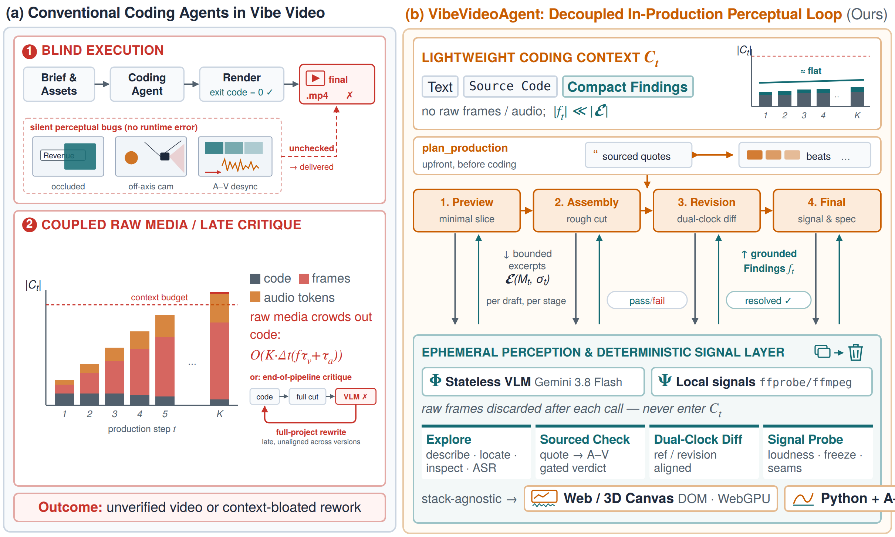
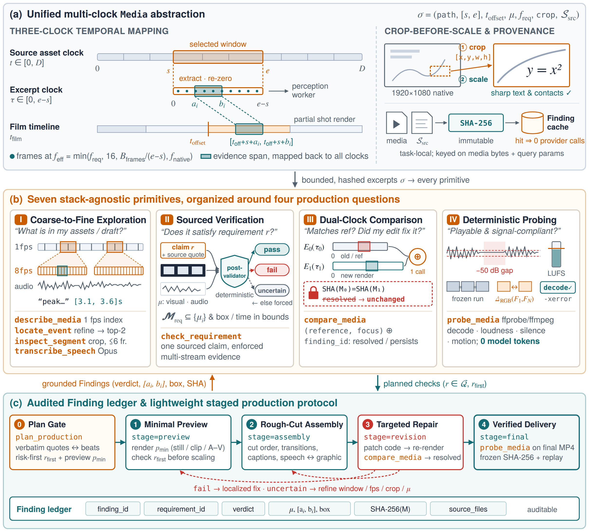
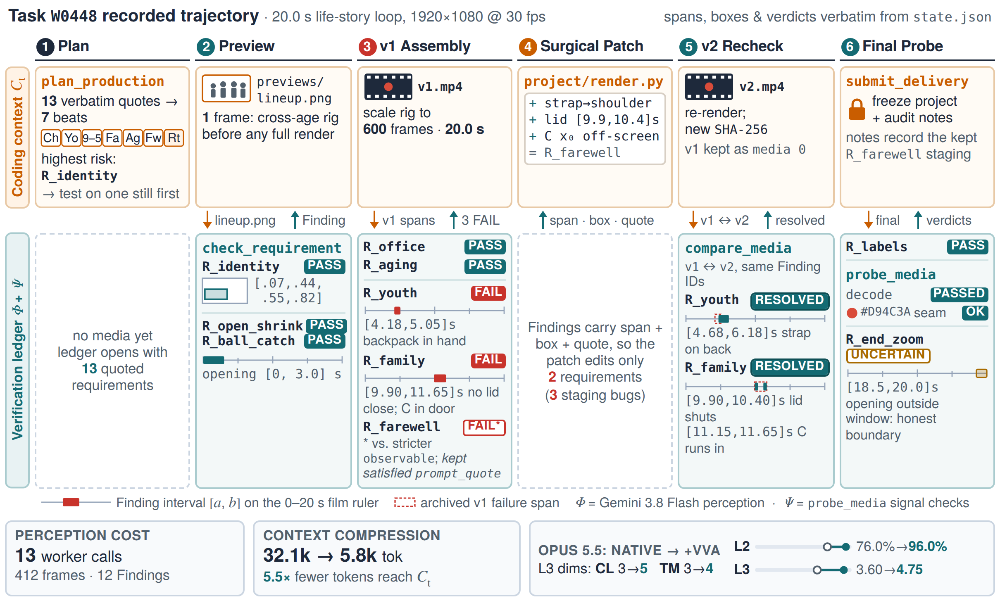

VibeVideoAgent: Closing the Perceptual Loop for Code-Driven Video Generation VibeVideoAgent：闭合代码驱动视频生成的感知回路
A training-free, rendering-stack-agnostic agent framework that decouples multimodal audiovisual perception from long-horizon coding—guiding iterative program repair across all 239 tasks of VibeVideoBench.
免训练、与渲染技术栈无关的多模态编码智能体框架：在短暂即弃的解耦上下文中执行视听感知，并结合七个互补原语与阶段化制作协议，全面提升代码驱动视频生成的视听品质与细则合规度。

Abstract摘要
Code-driven video generation—often termed Vibe Video—enables multimodal coding agents to author deterministic typography, data visualizations, synchronized audio, and editable multi-shot scenes by writing executable rendering programs rather than sampling black-box pixel diffusion models. Yet clean program execution does not guarantee perceptual correctness: occluded layouts, off-target cameras, broken object interactions, and audio–visual desynchronization trigger no runtime exceptions. Feeding rendered video and audio directly into the coding session rapidly bloats the long-horizon programming context, whereas deferring critique until a full-resolution render finishes turns early design mistakes into costly whole-project rewrites.
We introduce VibeVideoAgent, a training-free, stack-agnostic agent framework that closes the perceptual loop throughout programmatic video production. VibeVideoAgent executes multimodal perception (Gemini 3.8 Flash) in short-lived, decoupled contexts alongside zero-cost local signal analysis, exposing a unified multi-clock draft representation through seven complementary primitives: coarse-to-fine asset and draft navigation, sourced requirement verification with enforced modality completeness, dual-clock differential comparison across reference assets and revised drafts, and deterministic stream probing. Evaluated across all 239 tasks of VibeVideoBench under strictly matched runtimes, VibeVideoAgent consistently improves holistic audiovisual quality (L3) across Claude Opus 5.5 (4.03 → 4.41, +0.57 on A–V sync), GPT-6 Astra (4.03 → 4.27, lifting L2 to 99.15% and L1 to 99.51%), and Claude Sonnet 5.5 (3.97 → 4.10, +0.40 on A–V sync).
代码驱动视频生成（常被称为 Vibe Video）使多模态编码智能体能够通过编写可执行渲染程序来生成确定性排版、数据可视化、同步音频与可编辑多镜头场景。然而程序顺利执行并不代表感知正确：布局遮挡、镜头偏离目标、物体交互失效与音画不同步不会触发任何运行时异常；将渲染视频直接塞入编码会话会迅速挤占长程编程上下文，而等到全片渲染完成再审阅又会导致代价高昂的整体重写。
本文提出 VibeVideoAgent——一种免训练、与渲染技术栈无关的智能体框架。VibeVideoAgent 在短暂即弃的解耦上下文中执行多模态感知（Gemini 3.8 Flash），结合零开销本地信号分析，在统一的多时钟草稿表征之上提供七个互补原语与轻量级阶段化制作协议。在 VibeVideoBench 全部 239 个任务上，VibeVideoAgent 在三大基座上一致提升整体视听品质（L3）：Claude Opus 5.5 从 4.03 升至 4.41（音画同步 +0.57），GPT-6 Astra 从 4.03 升至 4.27（L2 细则通过率达 99.15%、L1 技术合规达 99.51%），Claude Sonnet 5.5 从 3.97 升至 4.10（音画同步 +0.40）。
Multi-Clock Abstraction & Seven Primitives多时钟草稿表征与七大原语

describe_media, locate_event, inspect_segment, transcribe_speech, check_requirement, compare_media, probe_media), and the staged production protocol (plan_production).
图 2. 统一多时钟草稿表征、七个 MCP 制作原语与阶段化制作协议架构，无需针对特定渲染引擎编写适配器即可跨 HTML/Canvas/WebGPU、React/Remotion、Cairo、Manim 与 FFmpeg 管线通用。
Main Results on VibeVideoBench (239 Tasks)VibeVideoBench 全量 239 任务主实验结果
Equal-weight dual-judge averages across Gemini 3.8 Flash and Gemini 4 Argon under strictly matched 16-vCPU rendering sandboxes and fixed Gemini 3.8 Flash perception back-end.
在严格一致的 16-vCPU 隔离渲染沙箱与固定 Gemini 3.8 Flash 感知后端下，Gemini 3.8 Flash 与 Gemini 4 Argon 等权双裁判评测结果（L1/L2 为百分比，L3 各维度为 1–5 分）。
| Coding Backbone | Configuration | L1 Spec ↑ | L2 Rubric ↑ | VQ ↑ | VA ↑ | CL ↑ | TM ↑ | AQ ↑ | L3 Mean ↑ |
|---|---|---|---|---|---|---|---|---|---|
| Claude Opus 5.5 | Native Agent | 99.92 | 98.87 | 4.04 | 4.08 | 4.09 | 4.03 | 3.89 | 4.03 |
| Claude Opus 5.5 | + VibeVideoAgent | 97.81 | 98.43 | 4.35 | 4.40 | 4.45 | 4.39 | 4.46 | 4.41 |
| Claude Sonnet 5.5 | Native Agent | 99.18 | 96.36 | 3.97 | 4.02 | 4.03 | 3.96 | 3.85 | 3.97 |
| Claude Sonnet 5.5 | + VibeVideoAgent | 95.75 | 94.61 | 3.98 | 4.05 | 4.15 | 4.07 | 4.25 | 4.10 |
| GPT-6 Astra | Native Agent | 98.93 | 98.67 | 4.07 | 4.09 | 4.08 | 3.98 | 3.94 | 4.03 |
| GPT-6 Astra | + VibeVideoAgent | 99.51 | 99.15 | 4.26 | 4.31 | 4.29 | 4.20 | 4.26 | 4.27 |
Recorded Closed-Loop Repair Trajectory实录闭环制作与修复轨迹（W0448）

W0448: upfront risk-first preview check, assembly-stage defect localization, surgical script patching, and dual-clock compare_media verification lifting L2 from 76.0% to 96.0% and L3 from 3.60 to 4.75 (Gemini 3.8 Flash judge).
图 3. 任务 W0448 完整实录轨迹：前置高风险单帧预览校验、粗剪阶段精准定位三处动作缺陷、局部代码修补及双时钟差分验证，将 L2 从 76.0% 提升至 96.0%，L3 从 3.60 提升至 4.75。